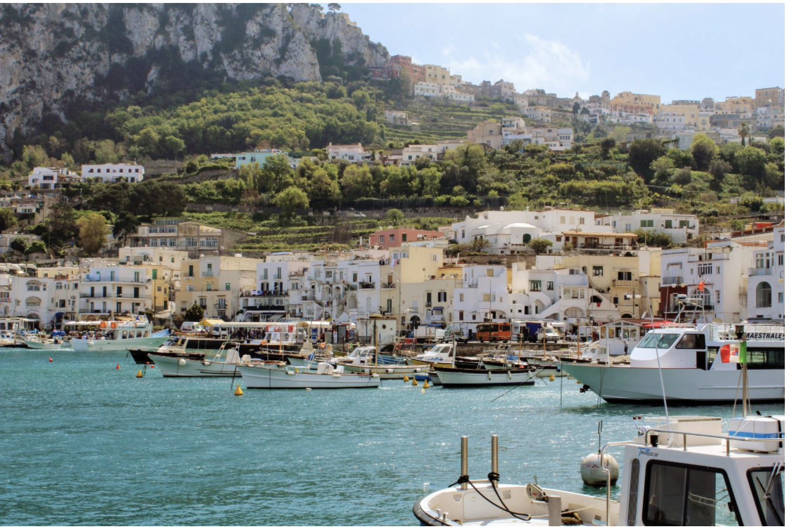

"Success is not final, fear is not fatal. It is the courage to continue that counts." --Winston Churchill
Press play and listen to music while you read my page!
Hello, my name is My name is Tony Karalekas, I am 23 years old, and I am from Florida and I’m a senior at Colby College where I am completing an Economics/Financial Markets major and a Computer Science minor. Outside of the classroom, I am a (retired) member of the men’s basketball team, a front-desk attendant at the gymnasium, and an active partner of Mayflower Hill Captial, a student-run, on-campus investment fund. My hobbies photography, hiking, and music and during my semester abroad in Italy, I got super into photography and have started my own photography streams on Flickr, and Instagram. After graduation in May, I will be moving to San Francisco, California to work as a Markets Analyst for Citigroup.
| ID | Name |
|---|---|
| EC393 | Econometrics |
| EC338 | Money and Banking |
| CS481 | CS Capstone: Mule Munchies |
| IT235 | Italian Conversation |
After a semester abroad in Milan, Italy I fell in love with traveling and photography. Click the link above to read my Travel Blog Here are two of my favorite pictures from abroad. Click on the images to read my blog post from that destination!
Video editing courtesy of GoPro.